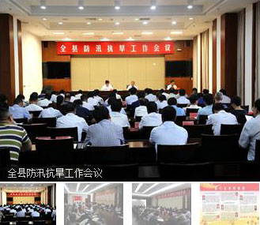

水利要闻
- 关于召开西汉水康成段界河河道采砂.. [2016-11-28]
- 市水务局局长石培强一行深入康县云.. [2016-11-28]
- 两当县山洪灾害“户户知”工程运营.. [2016-11-28]
- 省水利厅副厅长张天革来陇南市检察.. [2016-11-28]
- 市水务局开展“两学一做”学习教育.. [2016-11-28]
- 省水利厅召开第三次全省加快水利建... [2016-11-28]
- 市水务局在武都区防汛办召开了... [2016-11-28]
- 市水务局全体干部职工学习习近平总.. [2016-11-28]
通知公告+更多
信访通道
行政审批
媒体关注更多>>

友情
链接